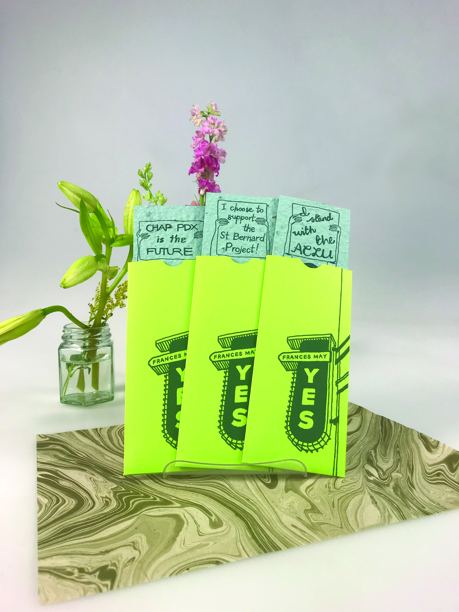
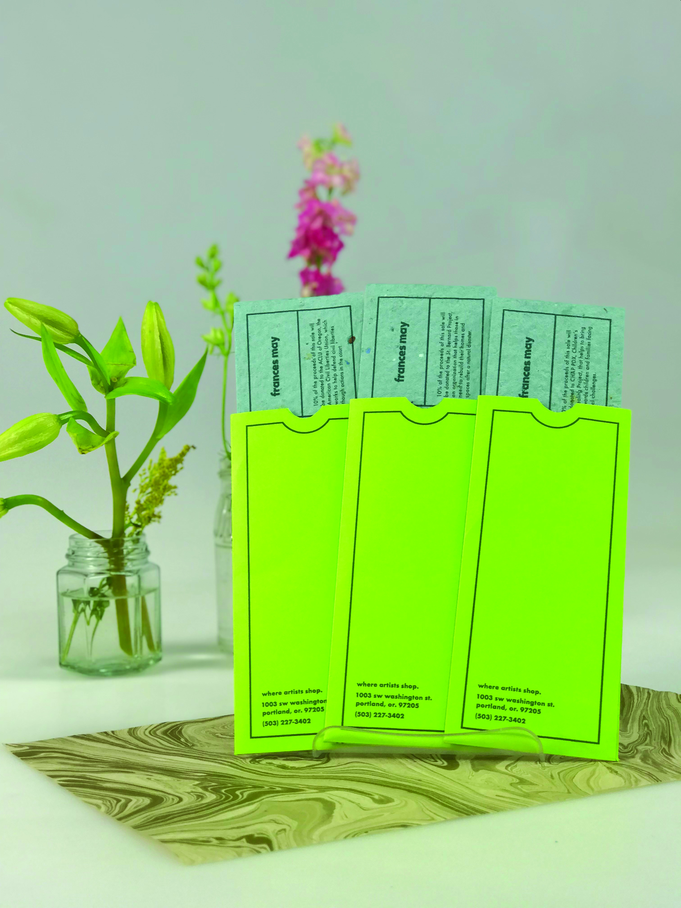
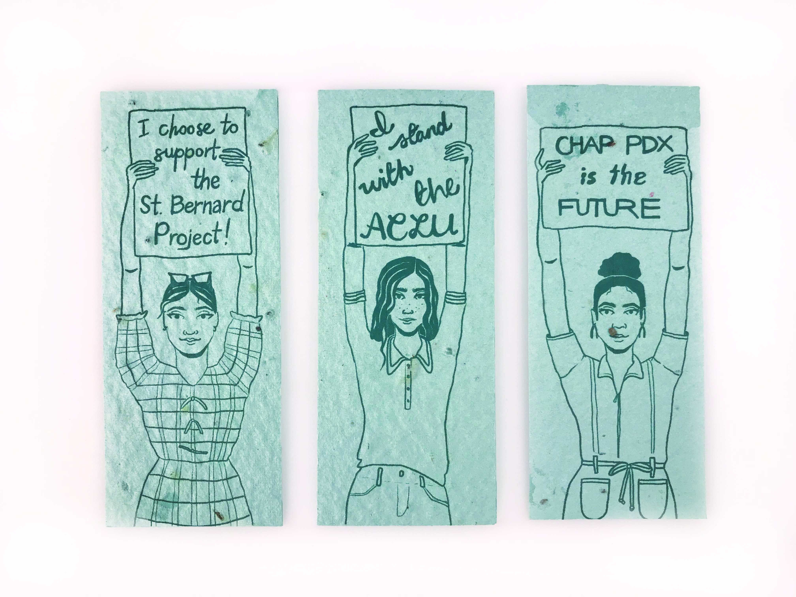
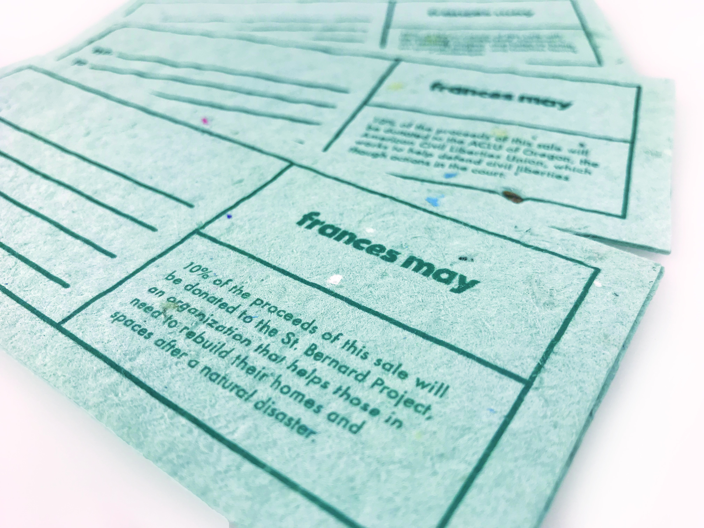

Founded right here in Portland, OR, in 2008, Frances May is a contemporary luxury clothing retailer located in Downtown. With close ties to many local organizations, this set of three gift vouchers puts a spotlight on the amazing work done by three of the many great non-profits within the city. The vouchers themselves are printed on plantable wildflower seed paper and the sleeves from recyclable, neon cardstock to ensure that they are sustainably-produced.

